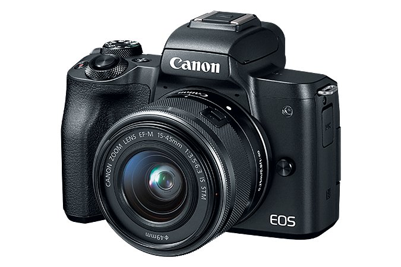

Of course, I decided to make things difficult.
See, photography is something anyone can do. We all have smart phones, and a simple point and shoot (or even simpler instant printing) camera is fairly low cost and user friendly.
Photography is an art form and one I plan on taking classes on eventually (post-covid) so I did my research on cameras and found my mirrorless DSLR Canon EOS M50.
My camera is a Canon EOS M50. It’s considered to be a decent entry level camera, and good for content creators as well. It’s specs include:
Hobbies cost money, and mine is no exception. So far my cost have been around $1100. The camera and the lens I got with it cost over half of this, the rest being in various supplies and gear. Is this a lot for a hobby? I don’t think so, hobbies are for enjoyment after all!